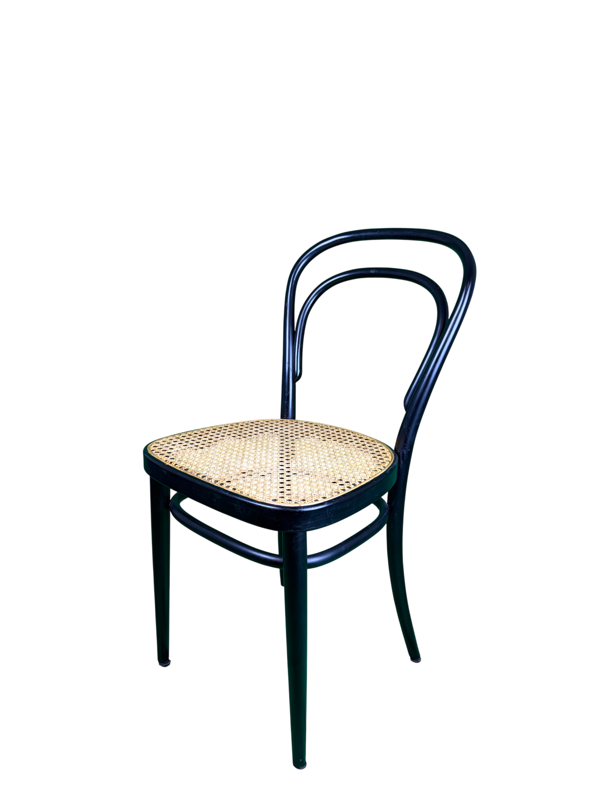
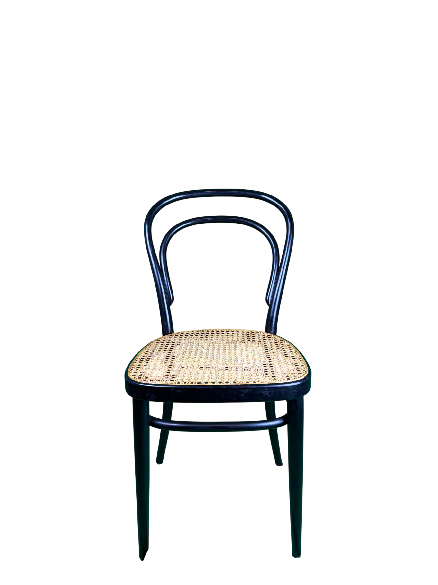
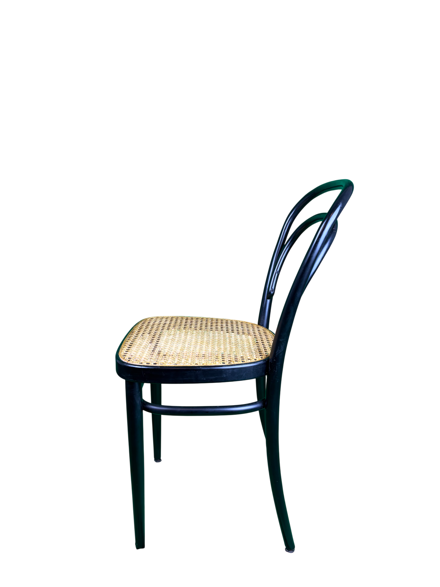
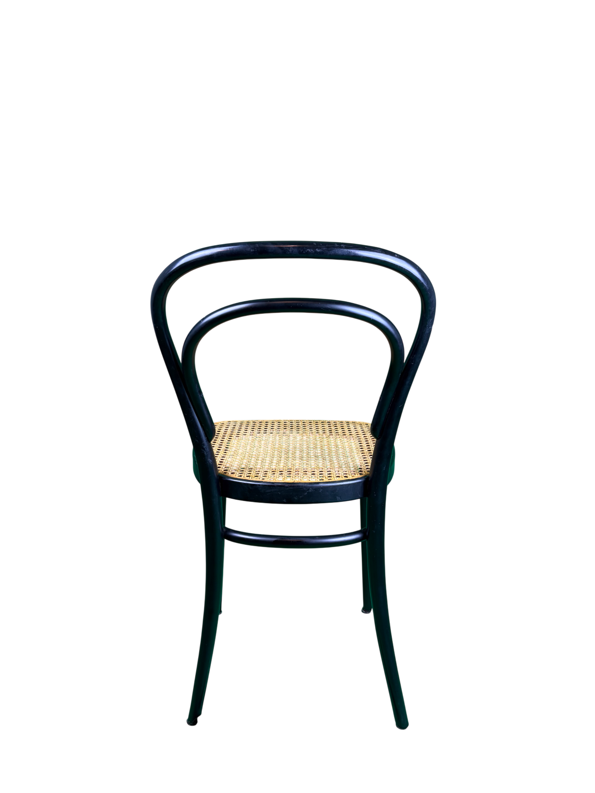
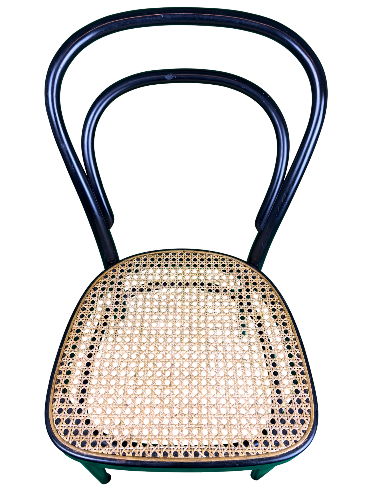

214 Bugholzstuhl
von Michael Thonet
300,00 €
Abholung in Bremen, 28219
Lieferung per Spedition gegen Aufpreis möglich.
Der 214 Bugholzstuhl wurde um 1859 von dem Designer Michael Thonet entworfen und wird bis heute von Thonet produziert. Der Stuhl entstand in Mitteleuropa und wurde ursprünglich in den Thonet-Werken in Österreich und Mähren gefertigt. Charakteristisch ist die konsequente Verwendung der Bugholztechnik, bei der massives Buchenholz durch Dampf gebogen und zu einer leichten, stabilen Konstruktion verarbeitet wird. Das Modell 214 gilt als einer der bekanntesten Kaffeehausstühle und steht für die frühe industrielle Möbelproduktion in Serienfertigung. Durch seine reduzierte Konstruktion, die einfache Zerlegbarkeit und den sparsamen Materialeinsatz wurde der Entwurf weltweit erfolgreich eingesetzt und zählt zu den wichtigsten Arbeiten des modernen Möbeldesigns des 19. Jahrhunderts.
Farbe: Schwarz, Beige
Material: Holz, Rattan-Geflecht
Abmessungen:
Höhe:
Tiefe:
Breite:
Sitzhöhe:
Gut
Der Stuhl befindet sich in einem guten Zustand. Das Rattan-Geflecht wurde bereits ersetzt und es gibt keine Beeinträchtigungen bei der Nutzung. Lediglich das Holzgestellt hat kleinere Kratzer und Schrammen, welche die Funktion aber keineswegs beeinträchtigen.
Verkäufe erfolgen ausschließlich nach individueller Bestätigung.